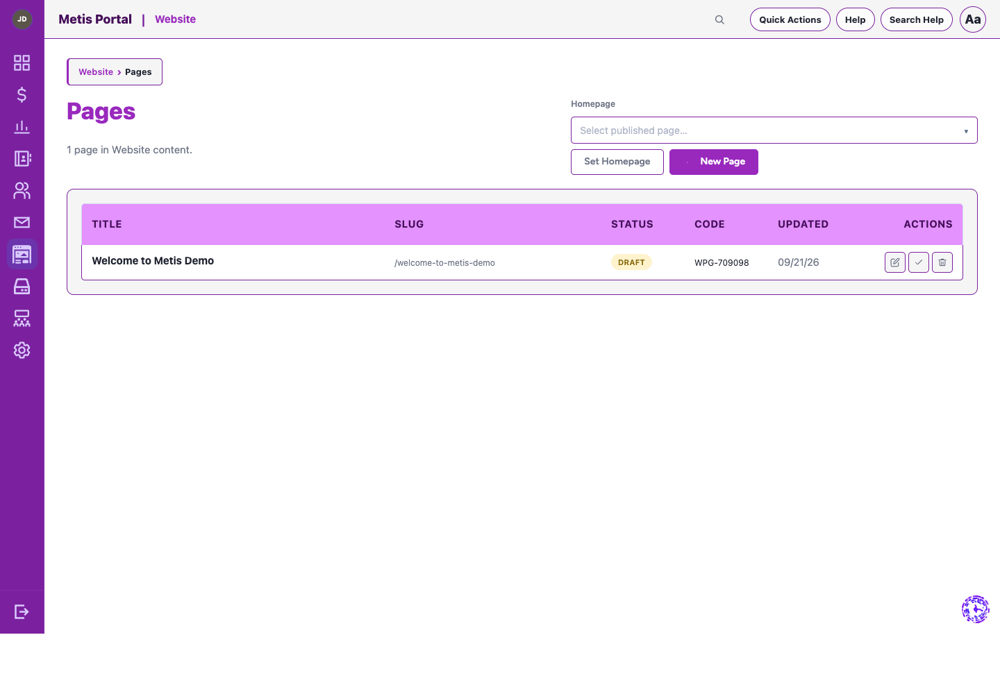
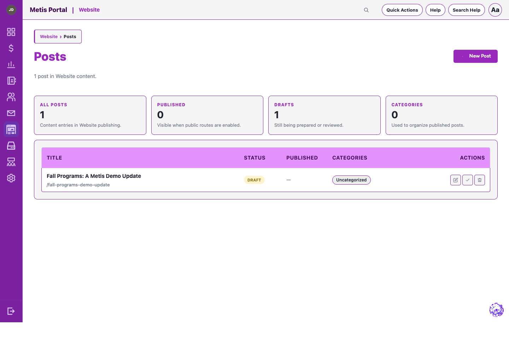

Engagement module
Website
Manage your public website with structured pages, posts, menus, media, publishing tools, and first-party analytics.
What it helps your team do
- Create pages and posts with categories, tags, media, menus, templates, reusable blocks, and theme controls.
- Work safely with autosaved drafts, revisions, preview, scheduled content, redirects, banners, and popups.
- Publish SEO essentials including a sitemap and robots file from shared services.
- Review first-party analytics for traffic, engagement, campaigns, and conversion actions.
Pages
See every page, its URL, status, and the actions available to your publishing team.
Build on a visual canvas, add reusable blocks, and keep page settings alongside the content.

Posts
Review drafts, published posts, categories, and the status of each update at a glance.
Write and structure an update in the editor, with draft controls, content blocks, metadata, and publishing settings together.

Good to know
Website analytics use no external provider and do not retain IP addresses, raw user agents, or query strings. Do Not Track and Global Privacy Control are respected.